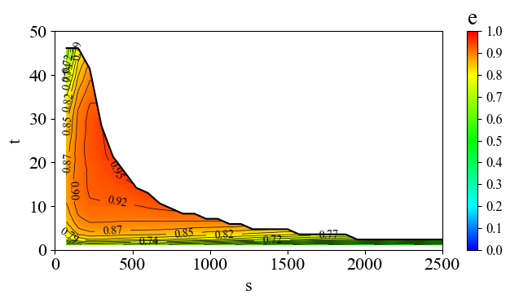

Matplotlib 绘制等高线图
帮老婆绘制科研中的图像，因为接触绘图工具较少，所以跟ChatGPT 聊了好久才调整出满意的图像。于是记录下源码：
预设参数
提前设置几个可以手动调整的绘图参数：
import numpy as np
input_csv = 'data.csv' # 输入文件地址
x_lim = 2500 # 横坐标最大值
y_lim = 50 # 纵坐标最大值
label_num = 12 # 显示数据标签条数
z_scale = 0.01 # z 轴数据缩放倍数
contour_levels = np.linspace(0,1.0,40) # 等高线条数
contourf_levels = np.linspace(0,1.0,200) # 等高线渲染密度 数据预处理
读取数据，并获取坐标轴的名字：
import pandas as pd
raw_data = pd.read_csv(input_csv)
# 获取坐标名
[axis_x, axis_y, axis_z] = raw_data.columns[:3]
# 排除掉x,y 轴为0 的数据
data = raw_data[
(raw_data[axis_x] != 0) &
(raw_data[axis_y] != 0)]
# 获取边缘数据
data_edge = data.groupby(axis_x)[axis_y].max().reset_index()
data_x = data[axis_x]
data_y = data[axis_y]
data_z = data[axis_z]*z_scale 插值并处理异常数据
这里遇到了布尔掩码加速异常处理的操作，蛮有意思的：
from scipy.interpolate import griddata
# 定义要生成等高线图的网格范围
x_grid = np.linspace(min(data_x), max(data_x), 1000)
y_grid = np.linspace(min(data_y), max(data_y), 1000)
x_grid, y_grid = np.meshgrid(x_grid, y_grid)
# 对数据z 进行二维线性插值
z_interp = griddata((data_x, data_y), data_z, (x_grid, y_grid), method='linear')
# 对于上边界进行线性插值
edge_interp = np.interp(x_grid[0], data_edge[axis_x], data_edge[axis_y])
# 处理边界问题，利用布尔掩码
mask = y_grid > edge_interp
# 将符合条件的值设为 NaN
z_interp[mask] = np.nan绘制图像
import matplotlib.pyplot as plt
from matplotlib.colors import LinearSegmentedColormap
plt.rcParams["font.family"] = "Times New Roman" # 设置字体
plt.rcParams["font.size"] = 16 # 设置字号
# 定义图像渐变色
colors = [(0, 'blue'), # 起始颜色
(0.2, 'cyan'), # 过渡色1
(0.5, 'lime'), # 过渡色2
(0.8, 'yellow'), # 过渡色3
(1, 'red')] # 结束颜色
cmap = LinearSegmentedColormap.from_list('custom_cmap', colors)
# 调整图像大小
plt.figure(figsize=(7, 4))
# 绘制填充颜色的等高线图-区域上色
contourf = plt.contourf(x_grid, y_grid, z_interp,cmap=cmap,levels=contourf_levels)
# 添加右侧颜色条
cbar = plt.colorbar(contourf)
# 修改颜色条刻度
ticks=np.linspace(0,1,11)
cbar.set_ticks(ticks)
# 自定义刻度标签
# tick_labels=["{:.3f}".format(t) for t in ticks]
# cbar.set_ticklabels(tick_labels)
# 设置颜色条刻度的样式和标题
cbar.ax.tick_params(labelsize=12) # 单独设置字号
cbar.ax.set_title(axis_z)
# 绘制等高线
contour=plt.contour(x_grid, y_grid, z_interp, colors='k',levels=contour_levels, linewidths=0.5)
# 添加数据标签
plt.clabel(contour, contour.levels[-label_num:], fontsize=10, fmt='%.2f') # 由高到低选12条
# 绘制转矩边界曲线
plt.plot(x_grid[0], edge_interp, color='k', label="_")
# 设置 x 和 y 轴的范围
plt.xlim(0, x_lim)
plt.ylim(0, y_lim)
plt.xlabel(axis_x)
plt.ylabel(axis_y)
plt.tight_layout()
plt.show()得到结果如下：
